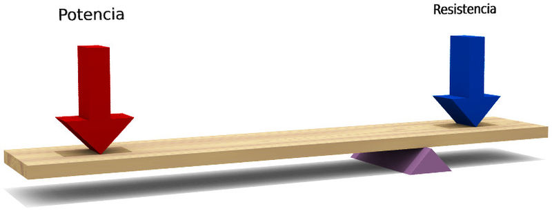
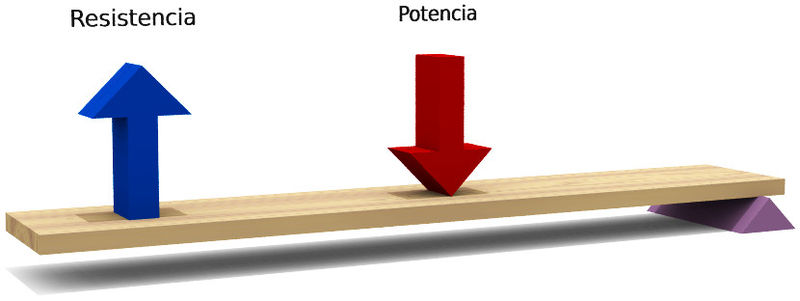

Palancas
Las palancas son barras rígidas que giran sobre un punto de apoyo, denominado fulcro. Permiten levantar pesos (resistencia) aplicando una fuerza en un punto de la barra (potencia).

Las letras "b" indican los brazos de la palanca:
- bP es la distancia entre la potencia (P) y el fulcro
- bR es la distancia entre la resistencia (R) y el fulcro.
En una palanca es vital la colocación del fulcro respecto de la potencia y de la resistencia, pues siempre se cumple una igualdad que se denomina Ley de la Palanca:
| \[P\cdot b_{P}=R\cdot b_{R}\] |
Así, se ve que mientras más cerca esté una fuerza del fulcro, mayor tendrá que ser esa fuerza para que la palanca esté equilibrada (porque se multiplica por un número más pequeño).
Como hemos visto, hay tres elementos clave en una palanca: la potencia, la resistencia y el fulcro. Según cuál de esos tres elementos esté en medio de los otros dos, podemos clasificar las palancas en tres géneros o grados:
Según el lugar donde estén situados el fulcro, la potencia y la resistencia, las palancas se clasifican en:
PALANCA DE PRIMER GÉNERO (O PRIMER GRADO)
En este tipo de palancas, el fulcro se encuentra entre la potencia y la resistencia:

Ejemplos del mundo real donde podemos encontrar palancas de primer género pueden ser un balancín del parque o unas tijeras.
En este tipo de palancas la potencia puede ser mayor o menor que la resistencia, dependiendo de la distancia de cada una al fulcro. En la palanca de la imagen anterior, ¿cuál crees que será mayor, la potencia o la resistencia?
Solución
Será mayor la resistencia, porque tiene el fulcro más cerca. En esa palanca la potencia que tenemos que hacer es bastante más pequeña que la resistencia que debemos vencer. Por lo tanto, es una palanca que nos da ventaja mecánica. Sin embargo, podemos encontrar palancas de primer género que producen desventaja mecánica (si la potencia se aplica más cerca del fulcro que la resistencia). Incluso hay un tipo especial en que el fulcro se encuentra justo en el centro y la potencia debe ser exactamente igual que la resistencia.
PALANCA DE SEGUNDO GÉNERO (O SEGUNDO GRADO)
En este tipo, la resistencia está entre la potencia y el fulcro:

Un ejemplo de este tipo de palanca lo tenemos en una carretilla de mano.
En este tipo de palanca siempre va a ser mayor una de las dos fuerzas (la potencia o la resistencia). ¿Sabrías decir cuál es siempre la fuerza más pequeña en las palancas de segundo género?
Solución
La más pequeña será siempre la potencia. Esto es debido a que la potencia siempre está más lejos del fulcro que la resistencia en una palanca de segundo género. Para que se cumpla la igualdad de la Ley de la Palanca, la potencia siempre tendrá que ser más pequeña que la resistencia. Decimos por esto que estas palancas siempre nos dan ventaja mecánica (tenemos que hacer menos fuerza que la resistencia que queremos vencer)
PALANCA DE TERCER GÉNERO (O TERCER GRADO)
Esta palanca es aquella que tiene la potencia aplicada entre la resistencia y el fulcro:

Un ejemplo de este tipo de palancas pueden ser unas pinzas de depilar.
De nuevo en este tipo de palanca siempre habrá una fuerza mayor que la otra. ¿Cuál de las dos fuerzas será en esta ocasión la más pequeña?
Solución
En esta ocasión la fuerza más pequeña será siempre la resistencia, porque siempre estará más lejos del fulcro que la potencia. Así, tendremos que hacer más fuerza que la resistencia que queremos vencer. Este tipo de palanca siempre produce desventaja mecánica. Estas palancas no se usan para ahorrarnos esfuerzo, sino para facilitarnos la aplicación de la fuerza (usamos unas pinzas para sujetar cosas tan pequeñas que no podemos directamente con nuestros dedos, pese a que tengamos que hacer algo más de fuerza)